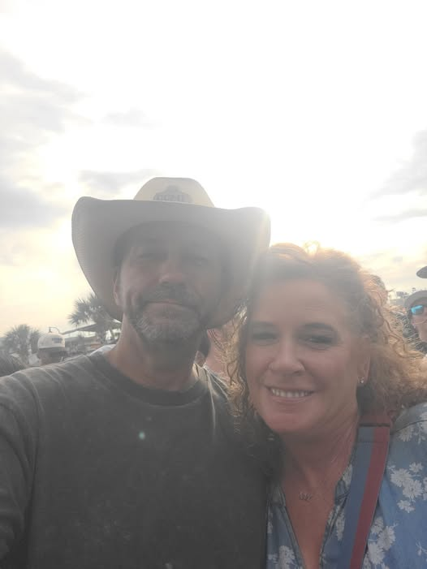

Sky Restoration
Recovered detail from an overexposed sky while naturally brightening the subjects.


Portrait Enhancement
Removed blemishes while preserving realistic skin texture.


House Visualization
Visualized a renovated home before construction begins.


Portrait Rejuvenation
Softened wrinkles while maintaining a natural appearance.